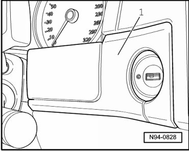
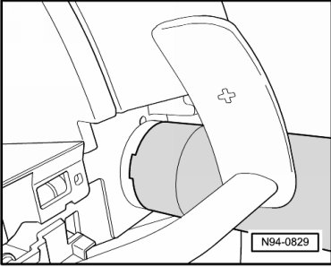

Access/Start Authorization Switch
Access/Start Authorization
Access/Start Authorization Switch
CAUTION!
When removing and installing components in visible area (switches, covers, trim, etc.), cover by taping the areas at which a prying tool (plastic wedge, screwdriver) will be positioned using commercially available adhesive tape.
• Access/Start Authorization Switch (E415) with integrated lock cylinder, integrated Anti-Theft Engine Disable Sensor (D1) and integrated Ignition Switch Key Lock Solenoid (N376) is one component and can only be replaced completely.
Special tools, testers and auxiliary items required
• Wrench (T10152)
• Release lever (T10039)
• Wedge (T10039/1)
Removing
CAUTION!
When disconnecting battery, procedure must always be followed as described in the repair information --> [ Battery, with Auxiliary Battery or Two-Battery Layout, Disconnecting and Connecting ] Battery, with Auxiliary Battery or Two-Battery Layout, Disconnecting and Connecting. Not adhering to sequence will result in the deactivation of Main Battery Switch -E74- and subsequent damage to electrical system components.
- Disconnect battery --> [ Battery, One-Battery Layout, Disconnecting and Connecting ] Battery, One-Battery Layout, Disconnecting and Connecting.
- Remove radio or radio-navigation system --> Communication 91 Removal and Installation.
- Pry trim strip - 1 - out of locking mechanisms using wedge (T10039/1).

- Place polydrive key (T10152) on Access/Start Authorization Switch (E415) into cut-outs of mounting nut.

- Remove mounting nut of Access/Start Authorization Switch (E415) and grasp Access/Start Authorization Switch (E415) through instrument cluster (radio or radio-navigation system removed) and guide Access/Start Authorization Switch (E415) out.
- Disconnect multi-pin harness connector from Access/Start Authorization Switch (E415).
Installing
Install in reverse order of removal, noting the following:
- Tighten mounting nut of Access/Start Authorization Switch (E415) by hand using polydrive key (T10152).
• Adaptation or coding of Access/Start Authorization Switch (E415) after removing or installing is not necessary.